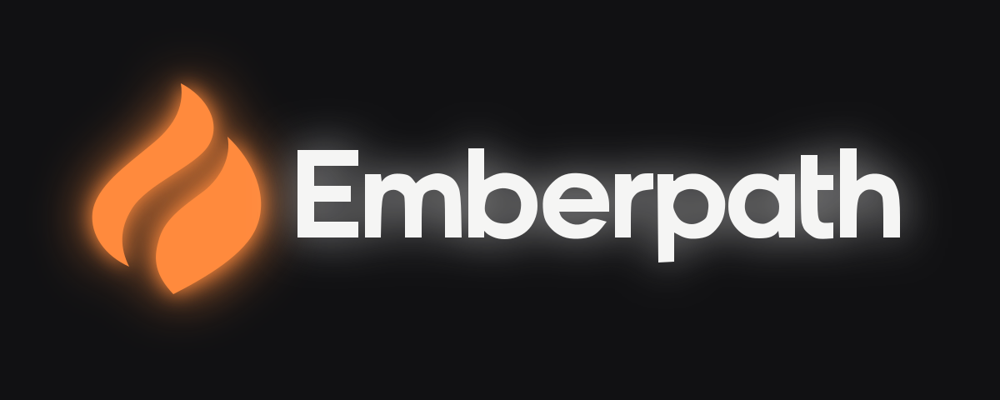

A steady spark. A path forward.
Logo assets and the dark color palette for the first weight-logging module.

Color roles
Background
#111113Surface
#1B1B1FRaised surface
#25252AControl border
#777780Primary text
#F5F5F4Secondary text
#A8A8A3Primary / trend
#FF8A3DSuccessful action
#7CC9A4In context
App icon and favicon